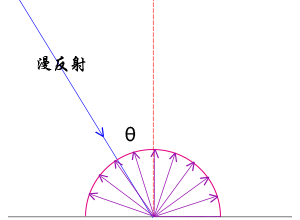
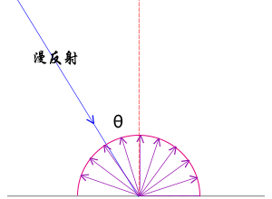
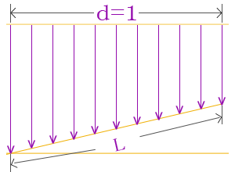
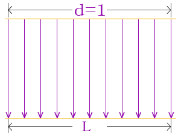
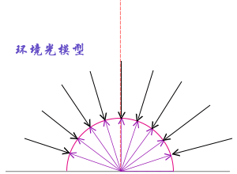
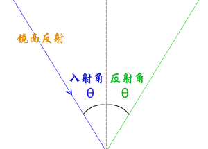
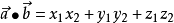

光线照在物体上，物体反射光线就会构成一个光场，眼睛看到生活中的物体有立体感就是因为有光的存在。因此在学习物理光学在WebGL编程中如何应用， 你就要先了解基本的光学知识。
生活中你看到一个红色立方体，从宏观的角度来看你会描述他是红色的，或者描述RGB值为(1,0,0)的立方体，这时候你要问自己一个问题， 如果呈现到眼睛中的红色平面图像，如果颜色是均匀的，你是否还有立体的感觉。换句话说就是如果把你看到的立方体图像分割成一个个像素单位， 那么每一个像素的RGB值都是(1,0,0)的话你是否有立方体的空间感，从前面课程的实验可以知道，是没有任何空间感的。 那就说明一个问题实际上在自然界中你看到的物体图像，如果看做一个光场，它就是一个变化的光场，并不是每个像素都是(1,0,0)。 这很好理解，抛开专业的物理光学不谈，其实生活中你会发现，比如太阳光照射到一个物体上，不同的面与光的角度不同，反射的到眼睛中的结果不同， 向阳面亮，背光面暗，不同的面不同的颜色，分界位置就有棱角感，。比如一个白色LED灯，靠近表面放在表面的中心， 你会感到表面反射到眼睛中的效果是越往四周越暗。
光照模型
漫反射
 

没有绝对的真理或迷信，所有的理论都是对生活现象的概括描述，上面提到一个几何体在太阳光下不同的面明暗不同，太阳离地球比较远，太阳光可以视为平行光，几何体不同的面与平行太阳光光线夹角不同， 换句话说就是相同强度的光线照射在表面上角度不同反射光线的强度也就不同，这里就对个现象建立数学模型。
漫反射光的颜色 = 几何体表面基色 x 光线颜色 x 光线入射角余弦值
这个数学模型没有考虑镜面反射描述的就是理想的漫反射体，并不能完整的描述物体表面的光场，既然是数学模型，自然就是可以修正的，比如添加一个系数，更改指数等等，这里不在详述。 比如普通的桌子桌面它的粗糙度是微米um级，相比人的脸它是平的，光的波长是纳米nm级，这时候桌子表面相比光线是凹凸不平的，宏观来看一束光线照射到物体的表面，对于理想的漫反射而言，因为表面无规则随机分布凹凸不平的反射面， 光线的反射是不定向的，换句话说任何角度的反射光都是一样的，这也就是说物体反射到眼睛中的光与人的观察位置无关，物体的漫反射光强度与光线的入射角有关如何解释，这个其实很简单，比如两块纸板面积相同，一个垂直太阳光线放置， 一个不垂直太阳光线也就是入射角不是90度，同样强度的光照条件下，垂直太阳光的纸板的光通量肯定比斜着放的纸板接收的光量大，这时候就有必要给数学模型引入一个入射角的因数。
 
光的颜色可以使用多种模型来表示，把上面的文字公式使用RGB具体参数来表示形式如下，比如物体表面的颜色是纯红色(1,0,0),入射光是纯白色(1,1,1),光线入射角是60度，余弦值就是0.5，代入下面公式，可以得出结果是(0.5,0,0), 结果仍然是红色，这是符合实际生活的，白色太阳光照在常见的红色物体上，反射的颜色是红色，只是太阳光线照射在物体表面的角度不同，反射的光强度不同。入射光垂直物体表面，也就是入射角是0对应的余弦值是1，光线垂直表面受光量最大， 反射光自然最大，和1对应；入射光线平行物体表面，此时的入射角是90度， 物体表面自然没什么光可以反射，
(R2,G2,B2) = (R1,G1,B1) x (R0,G0,B0) x cosθ
镜面反射
 
上面的漫反射数学模型没有考虑镜面反射，描述的就是理想的漫反射体，并不能完整的描述物体表面的光场。漫反射是因为几何体表面粗糙度尺寸相对光波长尺寸而言是凹凸不平的，这种凹凸不平又是随机的，所以说漫反射的光线各个方向是均匀的。 镜面反射也就是说光照在物体上的反射光线具有方向性，具体点说就是光线的反射角等于入射角。生活中的镜子它的表面粗糙度很小，和光的波长是一个数量级，当光线照在上面的时候，反射光线就会表现出方向性。
实际的生活中所有的物体没有绝对的漫反射或者镜面反射，往往都是同时存在，只是表现的倾向性不同，镜子的镜面反射更明显，粗糙的树皮漫反射更明显。光照射到物体上一部分会被吸收，透明的话一部分会被折射， 除去吸收和折射的光剩余的会被反射，反射的时候根据表面的粗糙度不同，镜面反射和漫反射分配的比例不同可以使用两个系数k1、k2去描述。
在室外停放着一辆车，你观察车的时候，你会发现车的外表面会在某个局部出现高光，这很好理解，车的外壳是曲面的，曲面上如果某个区域的的光线反射角刚好是你的视线方向，自然会呈现出局部高亮的现象，其他的部位是漫反射为主。 镜面反射的公式仍然可以写成上面的形式，只是角度不再是光线入射角度而是眼睛视线与反射光线的夹角，n角度余弦值的指数，实际编程的时候你可以自由定义，没有绝对完美的模型，都可以进行修正。
镜面反射光的颜色 = 几何体表面基色 x 光线颜色 x 视线与反射光线的夹角余弦值n
环境光照
在暗的环境下，物体比较暗，光亮的环境下，物体比较光亮，描述这个现象可以使用环境光照模型。光线在自然环境中会在不同的物体之间来回反射，单束的光线具有方向性，所有方向的光线随机分布，形成一个没有特殊的光线方向的的环境光照。 多数情况下室内室外环境光颜色通常都是RGB相同的白色到黑色之间的值，(1,1,1)表示最强的环境光照颜色，(0,0,0)相当于处于完全的没有光照的黑色环境中。
环境反射光颜色 = 几何体表面基色 x 环境光颜色
复合光照
使用光照渲染模型的时候往往会使用多种光照模型，然后把每个光照模型颜色相乘的结果RGB分别相加，这时候要注意，多种模型的光照颜色相加后RGB的值要保证在区间[0,1]，因为WebGL的RGB颜色模型默认RGB分量的最大值是1，注意分配比例即可。
总反射光线 = 漫反射光线 + 镜面反射光线 + 环境反射光线
法向量
有基本的数学知识应该都有法线的概念，垂直与面的直线就是面的法线，对于平面而言面上所有位置的法线方向是相同的，对于曲面而言不同的位置法线的方向是变化的。在三维笛卡尔坐标系中，可以使用向量(x,y,z)来表示法向量，根据几何体表面的法向量和光线的方向， 就可以求解出光线入射角的余弦值，法向量的点积计算满足下面的公式，为了方便计算，着色器语言内置了一个方法dot()用来求解两个向量之间的余弦值,已知向量a1(x1,y1,z1)、a2(x2，y2，z2)执行dot(a1，a2)可以求出两个向量a1、a2的余弦值。


立方体添加平行光
下面的案例是通过给一个单色的立方体添加平行光进行渲染，来体会光照模型在物体渲染中的应用，在学习下面的代码之前确定你有逐顶点和颜色插值计算的概念，了解顶点位置数据、顶点颜色数据，本节课在这两种顶点数据的基础之上在引入一种新的顶点数据。
平行光照射在立方体上，与不同的平面夹角不同，自然反射的颜色RGB值强弱不同，实际绘图的时候你不可能手动计算去定义每一个像素的值，前面课程中讲解颜色插值计算的知识，应该对你有一定的启发，你只需要计算出每一个顶点在光照下的颜色， 然后利用插值计算就可以得到三个顶点之间区域的像素值，这时候顶点法向量数据就派上了用场，每一个顶点都有位置数据、颜色数据、法向量数据，法向量和颜色数据先进行计算得出新的顶点颜色数据，然后渲染管线对顶点进行装配光栅化的过程中，新的顶点颜色数据进行插值计算。 这时候提示一下大家，不要去从宏观思考法向量问题，要从逐顶点、插值计算的角度理解问题，下面的问题可能大家会有一个疑问，为什么立方体的一个顶点会有三个方向，从实际的物体来看，立方体的一个顶点就是一个顶点，但是从绘图的角度来看， 每一次是通过三个顶点绘制一个三角形面，只不过恰好三个三角形面共顶点，会有顶点位置重复而已，但是每一组的三个顶点是一个装配光栅化和插值计算的独立单元，两组的三个顶点位置有重复也不会影响他们各自的渲染得到的像素结果。
顶点着色器：添加变量
16 /**用于光照计算的变量a_normal、u_lightColor、u_lightDirection**/
17 'attribute vec4 a_normal;' +//法向量变量
18 'uniform vec3 u_lightColor;' + //uniform声明平行光颜色变量
19 'uniform vec3 u_lightDirection;' + //平行光方向
20 'varying vec4 v_color;'+//varying声明顶点颜色插值后变量
查看上面的代码大家可以发现一个新的关键字uniform，着色器语言中声明变量的关键词就是attribute、uniform、varying这三个关键字，在Javascript语言中只有一个var或ES6中的let，这主要是因为着色器语言的特殊性， 不同的关键字顶标着不同的功能，初学者可能比较混乱，不知怎么区分，下面进行简单总结，为了课程讲解渐进性，不做过多总结，紧密结合代码总结。
attribute关键字大家课程中最早讲解，大家可以看到它都是出现在顶点着色器的代码中， 声明的变量往往与顶点数据相关，比如顶点位置坐标、顶点颜色值和本节课的顶点法向量数据，attribute关键字声明的顶点变量而且可以通过方法getAttribLocation()获取顶点数据的索引位置， 然后利用方法vertexAttribPointer()可以把类型数组创建的顶点数据传递给顶点着色器，然后逐顶点处理计算。你可以观察到这些方法中都有Attrib，通过名字就可以大致判断它的作用。
varying关键字在颜色插值计算中往往会使用，在顶点着色器代码第20行中声明了一个变量v_color，每个顶点的颜色与法向量进行乘法运算后，第49行进行赋值计算，等于告诉渲染管线离散的顶点颜色进行插值计算，去填充顶点之间的片元像素值， 为了完整实现这一点，需要在片元着色器代码中同样使用关键字varying再次声明该变量，这样的话插值后的颜色值会地递给片元着色器，通过执行第56行语句gl_FragColor = v_color，把片元对应的颜色值赋值给片元。
uniform关键字和attribute共同的作用是可以接收数据，不同点是接收的数据不同，attribute关键字声明顶点数据，这些数据会逐顶点处理，查看代码第18行第19行可以看出uniform关键字声明的数据不是顶点数据，这些数据往往都会重复利用，每个顶点进行计算的时候都会用到， 每个顶点对应的数据会有坐标、颜色、法向量等，但是光线的颜色和方向对于所有的顶点都是通用的，这些说明uniform关键字主要用于声明哪些会被重复利用的数据，比如光线颜色、光线方向、光线位置、模型变换矩阵。学习后面的课程可以看到uniform关键字也会用到片元着色器中， 这里没有用到就不展开讲解，不过attribute关键字只是用在顶点着色器中，一般用来接收各种类型的顶点信息。
代码第18行第19行都有一个关键字vec3，vec3和float、vec4、mat4一样都表示一种数据类型，vec3数据(a,b,c)可以用来表示三维坐标系中的向量，例如光线的方向、光线的颜色RGB，vec4可以用来表示顶点位置的齐次坐标(x,y,z,w), 包含透明度的RGB颜色模型RGBA(r,g,b,a),顶点的法向量。
顶点着色器：光照计算
dot()是着色器语言内置的一个函数方法，它的参数是两个向量，执行结果是两个向量的点积，如果光线方向向量和顶点法向量两个向量都是单位向量，求解的结果就是平行光线与物体表面法线夹角的余弦值。 这也是为什么要执行第43行代码的原因，normalize()和dot()一样都是着色器语言内置的函数方法用于数学计算，它的作用就是把向量归一化，具体点说就是如果向量的模长不是1，不改变向量方向，把模长变为1，也就是把向量转化为单位向量， a_normal在第17行代码中定义的是vec4类型，第四个参数默认是1主要是为了凑成齐次坐标用于矩阵计算，表示法向量方向的是前三个参数，所以执行a_normal.xyz就相当于访问法向量的xyz值，返回的结果是一个vec3数据，如果执行vec3.xy相当于返回一个vec2数据， 如果一个顶点的a_normal数据是(1,1,1，1)，那么它的模长就不是1，而是3的平方根，这时候需要把前三个1全部除以3的平方根才可以把非单位向量转化为单位向量。
第45行代码在dot代码的外面嵌套了一个函数max()，dot()的计算结果作为max()的第一个参数，dot的计算结果可能是[-1,1]之间，颜色不存在负值要舍去[-1,0),这时候就是max()方法派上用场的时候，第45行代码中max()函数的第二个参数是0， dot()方法的计算结果会和0进行比较运算，返回一个较大的值，着色器语言内置提供了max()函数，自然也有对应的求较小值的函数min()。余弦值是负值的物理意义就是光线无法照的地方，临界点是余弦值0，入射角是90度，也就是说入射光线平行平面， 平行平面相当于光线没有照射到平面上，平面没有收到光自然无法反射光，你可以尝试改变立方体顶点的旋转矩阵可以看到一些面的颜色是黑色，就是因为没有光线照射，这一点是复合实际生活和物理规律的，不管是提本身是什么颜色，没有外界光源，那就表现为黑色。
第47行代码是套用理想漫反射光照模型的一个公式进行计算，a_color变量是vec4类型包含透明度，计算式中没有计算透明度A，所以使用a_color.rgb语句返回a_color数据的RGB三个分量，也就是返回一个vec3类型数据。
第49行代码是通过把经顶点法线乘过的顶点颜色赋值给varying声明的一个变量实现颜色的插值计算，关于插值计算不在多谈，这里说一下着色器语言数据类型的相关转化、构造、访问相关问题，vec4、vec3等都是和float、int一样是数据类型的标识关键字，float、int在C语言中都是常见的类型， 着色器语言为了实现大规模的顶点运算增加了很多数据类型，vec4()、vec3()这时候的表达相当于一个vec4、vec3数据的构造函数，第49行代码中把一个vec3类型数据和一个vec4类型数据的一个分量a作为构造函数vec4的两个参数，来实现创建一个vec4类型数据。访问多元素数据的分量可使用点符号，从面对象的角度来看， 一个数据家是一个对象，数据的一个元素就是数据的一个分量，比如 a_color.a表示vec4类型数据 a_color的透明度分量a。
42 // 顶点法向量归一化
43 ' vec3 normal = normalize(a_normal.xyz);' +
44 // 计算平行光方向向量和顶点法向量的点积
45 ' float dot = max(dot(u_lightDirection, normal), 0.0);' +
46 // 计算平行光方向向量和顶点法向量的点积
47 ' vec3 reflectedLight = u_lightColor * a_color.rgb * dot;' +
48 //颜色插值计算
49 ' v_color = vec4(reflectedLight, a_color.a);'
获取着色器变量
要想给着色器程序中声明的变量传递数据，首先要获取数据的地址，然后通过指针地址传递给变量。要想获取变量地址，不可能像普通CPU变成一样，要考虑GPU的特殊性，首先要通过59行代码调用初始化着色器函数，把着色器程序通过CPU与GPU的通信传递给GPU配置渲染管线， 执行执行初始化着色器函数的同时会返回一个program对象，通过对象program可以获取着色器程序中的变量，getAttribLocation()方法用来获取attribute关键字声明的定点变量地址，getAttribLocation()方法获取uniform关键字声明的统一变量地址。
60 /**
61 * 从program对象获取相关的变量
62 * attribute变量声明的方法使用getAttribLocation()方法
63 * uniform变量声明的方法使用getAttribLocation()方法
64 **/
65 var aposLocation = gl.getAttribLocation(program,'apos');
66 var a_color = gl.getAttribLocation(program,'a_color');
67 var a_normal = gl.getAttribLocation(program,'a_normal');
68 var u_lightColor = gl.getUniformLocation(program,'u_lightColor');
69 var u_lightDirection = gl.getUniformLocation(program,'u_lightDirection');
传递数据
对于简单的数据，不像顶点有大批量数据，不需要在显存上开辟缓冲区上传数据，可以直接使用uniform3f()方法使用把数据传递给GPU，uniform3f(变量地址,x,y,z)表示传递三个浮点数，接收这个数据的变量是vec3类型,uniform2f(变量地址,x,y)表示传递2个浮点数,接收数据的变量是vec2数据类型， 以此类推还有方法uniform4f()、uniform1f()，命名的特点是数字表示传递的数据有多少分量，f是关键字float的缩写表示浮点数。
u_lightDirection变量在程序中要保证是单位向量，所以第15行的代码的书写方式保证了灯光方向向量的方向是(1,2,-3),(1,2,-3)的模长是15的平方根，所以要除以Math.sqrt(15)，实际的开发中一般不是这样手动计算写出来，而是写一个通用的归一化函数可以随时调用， 这里为了简化教学代码，直接手动计算好在输入数据。
70 /**
71 * 给平行光传入颜色和方向数据，RGB(1,1,1),单位向量(x,y,z)
72 **/
73 gl.uniform3f(u_lightColor, 1.0, 1.0, 1.0);
74 //保证向量(x,y,z)的长度为1，即单位向量
75 var x = 1/Math.sqrt(15), y = 2/Math.sqrt(15), z = 3/Math.sqrt(15);
76 gl.uniform3f(u_lightDirection,x,y,-z);
顶点法向量

对于立方体而言六个平面也就是有六个不同的平面法向量，但是这里要注意思考如何表达一个面的法向量，你不能说直接告诉GPU一个平面的法向量是(x,y,z)，对于立方体而言而言这样比较简单，符合人的思维，但是如果是复杂的曲面这样并不合适，而且顶点着色器是逐顶点处理， 为了表示面的法向量，往往是通过顶点，具体点说是每个顶点对应一个法向量，三个顶点确定一个三角面，三角面的不同位置的法向量相当于通过他的三个顶点的法向量插值得出，或者换个说法就是三个顶点的法向量分别与各自颜色数据进行乘法运算，得到新的顶点颜色， 然后渲染管线利用新的顶点颜色进行插值计算，这就是通过顶点法向量表示面法向量的方法，通过这样的巧妙设计还可以实现法向量的插值计算，只不过插值是通过颜色插值完成的，对于平滑的曲面，过每一个顶点存在一个法平面，也就是有一个法向量，往往在不同三角面中同一位置的顶点法向量是相同的， 对于规则的长方体而言，每个顶点法向量往往在各自平面中有不同的值。
99 /**
100 *顶点法向量数组normalData
101 **/
102 var normalData = new Float32Array([
103 0,0,1,0,0,1,0,0,1,0,0,1,0,0,1,0,0,1,//z轴正方向——面1
104 1,0,0,1,0,0,1,0,0,1,0,0,1,0,0,1,0,0,//x轴正方向——面2
105 0,1,0,0,1,0,0,1,0,0,1,0,0,1,0,0,1,0,//y轴正方向——面3
106 -1,0,0,-1,0,0,-1,0,0,-1,0,0,-1,0,0,-1,0,0,//x轴负方向——面4
107 0,-1,0,0,-1,0,0,-1,0,0,-1,0,0,-1,0,0,-1,0,//y轴负方向——面5
108 0,0,-1,0,0,-1,0,0,-1,0,0,-1,0,0,-1,0,0,-1//z轴负方向——面6
109 ]);
顶点法向量矩阵变换
不知大家是否注意到上面的顶点法向量数据并不是立方体的外表面的法向量，主要是因为立方体的顶点坐标经过了旋转矩阵变换，不管是顶点的坐标还是顶点的法向量都是相对WebGL坐标系而言， 顶点法向量数据和顶点位置数据并没有关联关系，因此没有随着顶点位置数据的旋转而变化，正是因为这一点，你可以尝试更改着上面案例色器程序中立方体顶点的旋转变换角度， 可以看到有些表面，它的法向量和平行光光线的夹角虽然小于90度，也就是说能被光线照射到，但是它的显示颜色却是黑色，这正是因为顶点坐标虽然经过了旋转变换，但是顶点法向量没有跟着变化， 本节课的内容就是为大家解析如何利用矩阵乘法运算实现顶点法向量的跟随顶点位置同步旋转。
旋转、平移变换
三维模型的几何变换有平移、缩放、旋转、剪切、镜像等多种，这里就简单分析下旋转变换和平移变换对顶点法向量的影响，几何体平移变换后，几何体表面相对坐标系原点整体偏移，物体的表面相对坐标轴并没有发生旋转， 几何体表面的法平面法线没有变化，也就是说平移矩阵左乘顶点坐标后，顶点的法向量数据不变化不会影响光照计算。几何体旋转变换后，它的表面相对坐标轴发生了旋转，表面的法线自然发生变化， 一个几何体在计算机图形中的描述是一个个顶点，在几何体旋转的过程中，顶点的法向量和顶点的位置坐标是同步旋转变换的，顶点位置变换是通过旋转矩阵乘法运算实现， 也就是说顶点的法向量也乘同样的旋转矩阵就可以保证几何体表面的法线随着几何体旋转而旋转。
在上节课的代码中直接修改顶点着色器代码即可。
42 // 顶点法向量归一化
43 ' vec3 normal = normalize(a_normal.xyz);'
旋转矩阵mx、my连乘后，再乘以顶点法向量a_normal,这时候你可以随意更改旋转角度，通过观察颜色可以知道立方体顶点的法向量对着立方体旋转而旋转。
42 // 顶点法向量归一化
43 ' vec3 normal = normalize((mx*my*a_normal).xyz);'
复合变换
如果几何体发生多次旋转，也就意味着几何体的表面法线相对坐标系也发生多次旋转变换，把多个旋转变换矩阵连乘，再乘以顶点法向量构成的列向量即可，这一点和顶点位置坐标旋转变换计算一样。
如果几何体先后进行旋转、平移变换，假设旋转矩阵为A，平移矩阵为B，矩阵AB连乘后得到复合矩阵C，C再乘以顶点位置齐次坐标，就可以得到复合变换后的顶点坐标，对于顶点法向量而言直接右乘旋转矩阵A即可， 不需要关注平移矩阵A，实际的编程中几何体可能发生非常多次平移矩阵、旋转矩阵，没有必要再计算一遍旋转矩阵连乘，可以利用复合矩阵C来求解几何变换后的顶点法向量，但是要矩阵C进行一定变换，才能再乘以顶点法向量。 这很好理解，你可以使用平移矩阵乘以一个顶点法向量，可以看得到顶点法向量的值发生变化，前面说过几何体平移不影响顶点法向量，因为复合矩阵C是包含平移矩阵的成分的，如果使用复合矩阵C直接乘以顶点法向量， 结果是不准确的。这时候线性代数的逆矩阵和转置矩阵知识就派上了用场，你可以把任意一个平移矩阵先利用初等变换的方法求解逆矩阵，再进行转置变换，也就是说求解出一个平移矩阵的逆转置矩阵，把逆转置矩阵与顶点法向量相乘， 你会发现得到的结果，顶点法向量前三个参数的值并没有发生变化，第四个参数发生了变化，不过这无所谓，进行光照计算的时候只会选择前三个参数，第四个参数只是用来辅助计算。这也就说明如果对复合矩阵C进行逆转置变换， 就可以消除平移矩阵对顶点法向量的影响，这时候会带来一个问题，复合矩阵C逆转置变化的过程中，它包含的旋转矩阵相当于也被执行了相同的变换，不过这不影响光照计算，因为旋转矩阵是正交矩阵，它的逆转置矩阵就是它本身， 正交矩阵的乘积仍然是正交矩阵，也就是说多个旋转矩阵相乘后，它的逆转置矩阵仍然是自身。
视线
课程在《WebGL坐标系》中讲解过WebGL图形系统默认的投影方向，或者说人的眼睛观察几何体的方向，或者说照相机拍照的方向。 代码中的灯光方向的向量数据，第三个参数是负数，也就是说从z轴的角度看，平行光照射物体的方向，就是人眼睛看物体的方向，如果把灯光方向的向量数据z参数更改为正数，刷新浏览器看到的是一个漆黑的立方体投影， 这时候相当于黑暗的环境中，人站在物体的背光面，而不是向光面，对于WebGL图形系统，你可以形象的理解为把光源从屏幕前面放到了屏幕的后面，人的观察方向是沿着z轴负方向，从屏幕外向里观察，光线自然被立方体遮挡住了。
75 var x = 1/Math.sqrt(15), y = 2/Math.sqrt(15), z = 3/Math.sqrt(15);
76 gl.uniform3f(u_lightDirection,x,y,-z);
灯光方向向量数据第三个参数，也就是z轴方向的数值更改为正数。
75 var x = 1/Math.sqrt(15), y = 2/Math.sqrt(15), z = 3/Math.sqrt(15);
76 gl.uniform3f(u_lightDirection,x,y,z);
立方体添加点光源
添加平行光是直接定义光线照射物体的方向，点光源的光线是发散的，无法直接定义它的光线方向，不过只要定义好点光源的位置坐标，然后与某个顶点的位置坐标进行减法运算，计算结果就是光源射到该顶点的方向。 这很好理解，在三维空间中两个点确定一条直线，几何体顶点代表一个点，点光源的位置代表一个点，直线所在的方向就是光线的方向，在三维笛卡尔坐标系中，把两个顶点的xyz三个分量相减就可以得到一个表示直线方向的向量， 把该向量和顶点法向量作为dot()点积函数的参数，可以计算出光线入射角余弦值然后代入漫反射光照模型公式可以得到新的顶点颜色，渲染管线利用新的顶点颜色进行插值计算可以得到立方体表面每一个像素的值。
添加点光源位置、颜色数据
点光源的颜色数据是使用WebGL接口uniform3f()方法传入着色器中，点光源的位置数据是使用着色器语言GLSL ES直接定义在顶点着色器程序中，这两种方式实现的结果都是一样的，通过这个对比你可以进一步着色器语言和Javascript语言可以操控的可以实现CPU和GPU通信的WebGL API。
40 /**设置点光源位置数据**/
41 'vec3 lightPosition = vec3(2,3,4);'
76 /**
77 * 传入点光源颜色数据
78 **/
79 gl.uniform3f(u_lightColor, 1.0, 1.0, 1.0);
计算光线方向
点光源的光线是发散的，点光源与每一顶点连线的方向都需要单独计算。第47行代码的功能是计算经过旋转变换后的顶点坐标，这样可以保证光线方向随着立方体旋转动态变化，尤其是制作旋转动画。
第49行代码用来计算光线方向，然后利用内置函数 normalize()归一化向量数据，vec3(vertexPosition)和vertexPosition.xyz的写法是等效的，都是为了提取vec4类型顶点数据前三个分量，返回的数据类型是vec3，比如vec2(vec4)就是提取vec4的前两个分量。
46 // 计算顶点位置
47 ' vec4 vertexPosition = mx*my*apos;' +
48 // 计算点光源照射顶点的方向并归一化
49 ' vec3 lightDirection = normalize(vec3(vertexPosition) - lightPosition);'